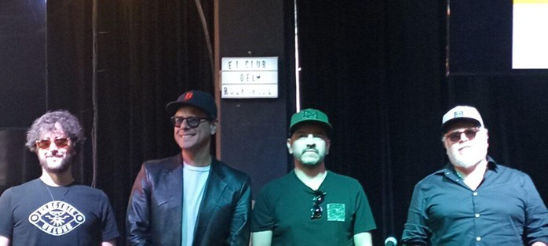
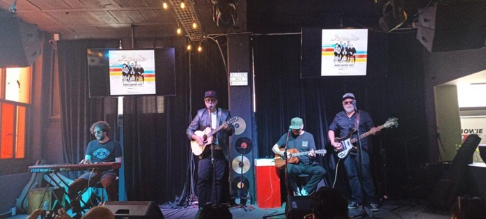

Jumbo se alista para conmemorar sus 25 años de trayectoria con un concierto especial este 27 de septiembre en el Pepsi Center. Este evento promete ser una experiencia extensa e inédita, con un setlist que abarcará desde 1999 hasta su trabajo más reciente.
“ESTE CONCIERTO REPRESENTA EL CIERRE DE UN CICLO DE 25 AÑOS. SERÁ UN EVENTO MEMORABLE Y ÚNICO.”
— CLEMENTE CASTILLO
El concierto no solo marca el fin de un capítulo, sino el inicio de una nueva fase. Tras la gira, la banda planea grabar nuevo material, enfocándose inicialmente en cuatro sencillos para conectar con las nuevas generaciones de consumidores musicales.
CONSEJO A NUEVOS MÚSICOS
“La clave es ser paciente, creer en uno mismo y mantenerse constante ante la influencia de las redes sociales”. — Beto Ramos.

SETLIST ACÚSTICO DE PRENSA
- FOTOGRAFÍA
- SIENTO QUE
- CADA VEZ QUE ME VOY
- DESPUÉS

Al final de la jornada, Jumbo nos deleitó con un showcase acústico cargado de nostalgia, reafirmando que su música, genuina y honesta, sigue vibrando con la misma fuerza que hace dos décadas y media.